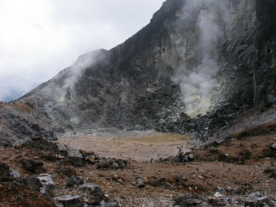

Indonesia Trav-E-Logs©
| Berastagi
|
|
| back: Penang - Georgetown | Traditional Karo Batak Architecture. |
================================= Arrived in Medan, Indonesia without incident and was given a 60-day visa on arrival at the boat dock. Wanted to go to Pulau Weh up near the city of Aceh, but was told the area is closed to foreigners (due to political unrest). So decided to go to Berastagi, where there is a volcano which can be climbed, and then probably to the Orang-utan Rehab center at Bukit Lawang. =================================
July 9 – 10, 2003
Upon arrival in Berastagi, decided to climb the volcano Gunung Sibayak the next morning, as it can be reached in about three hours on foot. The trail starts at the end of town at a tourist information hut, where simple maps are available. The well-worn path is not always that clear, as one encounters several branches along the way, and at one point you must climb an unmarked embankment to discover the continuation of the path. The trail passes through woods, fields, and construction sites, with many flowers begging to be photographed. The smell of sulfur permeates the air as the trail nears the rim, and I could not help but feel sorry for those who work in the caldera daily to collect sulfur. We scrambled around the rocks and boulders in and around the caldera for several hours, finally ending up at the top of the peak. Took a different, more woodsy path down the mountain so we could languish awhile at a hot springs on the other side of the mountain. Took more photos of flowers on the way back to town.
The most densely populated islands in the Indonesian Archipelago are Java and Madura, staunchly Muslim. To alleviate some of this overcrowding, the government has forced many to migrate to less-populated, non-Muslim areas such as Sulawesi, the Malukus, Irian Jaya, Sumatra, Flores, and Timor. Mosques are built where none existed. The merits of bringing the national religion to all islands may be well intentioned, but the implementation of this policy has lead to major conflict, and unfortunately resulted in many deaths. Should the government go into a town and forcibly move some of the merchants from the best business locations so immigrants have an equal opportunity? Should immigrants be given land? Housing? Pay the same taxes? How should any government encourage migration to less populated areas? I have no answers, but it certainly is not a new problem to society. Oops, back to travel.
Photos below: Rim of the volcano and telephoto of workers collecting sulfur; photos of two gas vents, and another showing sulfur crystals growing by a third vent; The lower part of the trail passes some rather dense growth; A mosque and church next to each other; Flowers in the wild and along the road.
|  | |
The bus for Bukit Lawang leaves in the early afternoon, so spent some time walking around town the next morning.
Enjoy!
Bill
------------------
Email me at the juno.com address "dancer2SEAsia"
"Travel is Fatal to Bigotry, Prejudice, and Narrow-minded ness" .... attributed to Mark Twain
| next: Bukit Lawang |
| back: Penang - Georgetown |